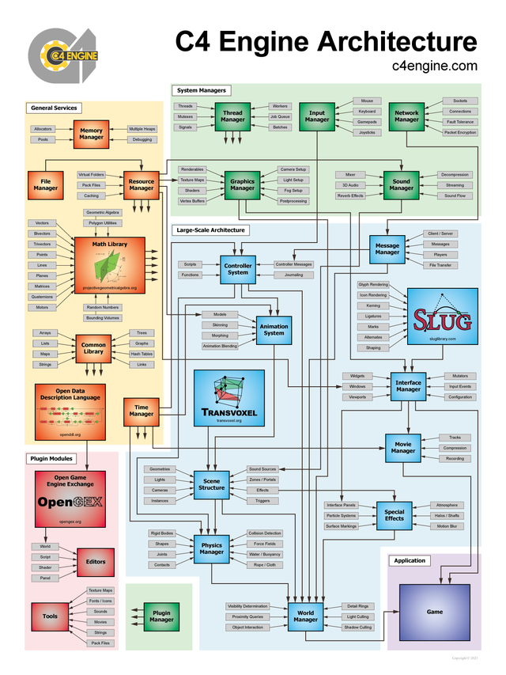

Programming Introduction
This page provides an introduction to the programming interface and general design philosophies of the C4 Engine. An understanding of each of the topics described below is essential to programming applications for the C4 Engine effectively. Specific information about the application programming interface (API) is not covered here, but instead can be found in the API Documentation.
Engine Architecture
{kind=link}

The main parts of the C4 Engine are made up of a collection of managers, each of which provides a specific type of functionality. The managers are arranged in a layered architecture as shown in Figure 1. (Click on the caption for a larger image.) Managers providing high-level functionality depend on other managers that provide low-level functionality. The lowest level managers are the only parts of the engine that interact directly with the operating system, and the layers above them are completely platform independent.
The low-level managers include the Sound Manager, the Network Manager, and the Input Manager. These managers utilize the lightest-weight interfaces for audio, networking, and input devices available on each platform supported by the engine. A platform-neutral API is then provided to the rest of the engine and to the game code. The engine also provides many low-level services that are platform-independent, and these include a containers library, math library, and built-in support for the Open Data Description Language (OpenDDL).
Specific applications and tools are built as dynamic-link libraries (DLLs) that are separate from the C4 Engine and loaded as plugins. This separation between the main engine module and other modules cleanly isolates the application-independent code in the engine. It also allows an application or tool to be rebuilt without having to recompile the engine. When the C4 Engine is run, it loads at most one application module and any number of tool modules.
The C4 Engine ships with several plugins that provide specific tools for building games. The largest plugin module is the World Editor, which is used to construct levels in a development environment that runs on top of the engine's own user interface system. The editor itself supports plugins, and one type of plugin is an importer that can bring in modeling data from external sources. The preferred format used by the World Editor is the Open Game Engine Exchange (OpenGEX) format, but the editor also includes a plugin that can read Collada files.
Nodes
A single scene that can be rendered in the C4 Engine is called a world and is represented by the World class. All of the items in a world are organized into a scene graph having a tree structure, and each node of this tree represents a single item. The C4 Engine defines a class called Node that serves as the base class for a large hierarchy of different classes used to represent a variety of different types of objects in the scene graph. Some examples of various node types and their associated classes are listed below.
- Lights. There are several distinct light types supported by the C4 Engine, and they are represented by the
Lightclass. - Cameras. Although only one type of camera is ordinarily used, the C4 Engine supports a few different types of cameras. They are represented by the
Cameraclass. - Geometries. Most polygonal geometry is encapsulated in the scene graph by the
Geometryclass. - Sources. Sound sources can be placed in the scene graph, and they are represented by the
Sourceclass. - Zones. Every world is divided into one or more zones, which can overlap and be arranged hierarchically. Zones are represented by the
Zoneclass. - Portals. Zones are connected by portals, represented by the
Portalclass.
A node can have any number of subnodes, and all nodes except the root node of the scene have exactly one supernode. Each node contains a transformation matrix that describes how coordinates are transformed from its local coordinate space to the coordinate space of its supernode. Each node also contains the transformation from its local space all the way to world space.
Objects, Controllers, and Properties
There are a number of auxiliary data structures that can be referenced by any particular node. For most types of nodes, there are corresponding types of objects. A node can reference only one object corresponding to its primary type (some types of nodes also reference additional special objects), but an object can be referenced by an unlimited number of nodes. This is how data instancing works in the C4 Engine. All instance-specific information (such as a transform) is stored in a Node subclass, and all information that is shared among all instances is stored in an Object subclass. The hierarchy of object classes is similar to that of nodes.
Each node in a scene graph may have a controller attached to it. A controller is represented by the Controller class and is used to manage anything about its target node that changes over time. For example, a controller could be used to move a geometry node in some way, or it could be used to modify the brightness of a light source. Several types of controllers are built into the core engine, and an application can define its own types of controllers by subclassing from the Controller class.
A node may have any number of properties attached to it that define any special characteristics that the node possesses. There are a few property classes built into the core engine, but most properties are defined by an application. A single subclass of the Property class can hold any amount of information, and an application can define a user interface for adjusting this information in the World Editor.